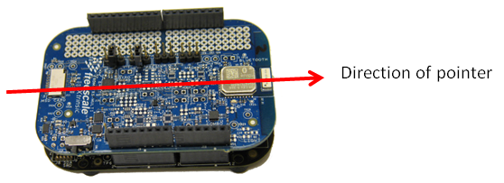
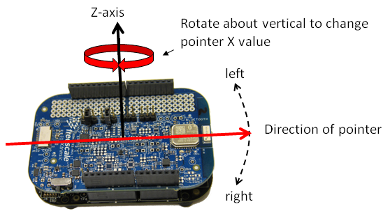
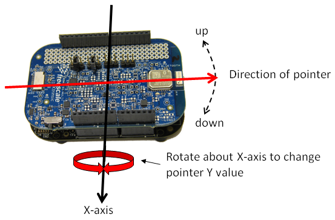

If you have a wireless sensor board, the Canvas view can be used to demonstrate wireless pointer operation. Tap the screen to center the cursor, then experiment with tilting your sensor board up and down and from left to right. You can also experiment with all the remote sensing options supported by your board. The underlying algorithm rotates two virtual vectors based upon the quaternion values transmitted by the board to compute an X,Y pointer location.
This chapter of the documentation describes how both absolute and relative pointers behave, and provides details of how they may be implemented based upon orientation quaternions computed on a sensor development board.
Figure 1: The Canvas view
Figure 1 shows the Canvas view, which is very simple. A cursor is drawn as a white square. The location of that cursor in an origin-centered X/Y plane is shown with the displayed X and Y coordinates. The major controls for this mode are the Source/Algorithm spinner and Absolute checkbox. The Source/Algorithm spinner selects the source for the quaternion to be used in the pointer calculations. The virtual pointer has two possible modes of operation. In "relative" or "air mouse" mode, each X,Y pair computed by the pointer is with respect to the previous value. When the Absolute checkbox is checked, each X,Y pair is computed against a previously defined orientation which virtually aligns with the center of the screen. You will be in the absolute pointer mode if the Absolute checkbox is checked. You will be in air mouse mode otherwise. When in air mouse mode, the canvas controls integrate the pointer X,Y values over time. In absolute mode, they simply use what is supplied. In both cases, X,Y coordinates are limited to the physical screen size.
You must have a sensor board to use the Canvas features. Only "Remote" and "WiGo" options are supported.
The "Share" function does not support the Canvas view (which is not that interesting anyway).

Figure 2: Point with the Bluetooth end of the board
Figure 2 shows the board axis that should be used as a virtual pointer. Once you have selected your Board/Algorithm option via the Source/Algorithm spinner, you should point your board towards the center of a "screen of interest" and simultaneously tap the display on the Canvas. This will "align" the pointer to the center of your "screen". The pointer.center() routine to baseline the pointer works as follows:
The same sequence works for both absolute and relative modes of the pointer. The difference is that absolute mode performs this function only once when you instruct the application to align the cursor with the center of the screen. In relative mode, it is performed at every sample interval. So in the first case, you always get an absolute difference from a known baseline, in the second, you get the change since the previous interval.

Figure 3: Pointer "X" is determined via rotations in the XY plane
Figure 3 shows that to change the "X" coordinate of your pointer, you should rotate the board about its Z-axis.

Figure 4: Pointer "Y" is determined via rotations in the YZ plane
Figure 4 shows that to change the "Y" coordinate of your pointer, you should rotate the board about its X-axis.
The pointer.update() routine to compute X,Y relative to the baseline defined above is as follows:
You may be asking "why do I need TWO different reference vectors ([1,0,0] and [0,0,1])? You need two in order to ensure your pointer does not have "blind spots". This would result if you rotated your board about an axis defined by your one reference vector. That is, [1,0,0] rotated about the X-axis is still [1,0,0]. By adding a second reference vector to the mix, you ensure that you always have the data you need to determine a valid direction.
The following is a listing of the actual code called each time the canvas gets updated:
protected void onDraw(Canvas canvas) {
super.onDraw(canvas);
boolean mouseMode = !demo.absoluteModeRequired(); // is the demo configured for relative or absolute pointer?
compute_scale(); // get screen dimensions and compute pointer sensitivity
A_FSL_Sensor_Demo.self.dataSelector.getQuaternion(q); // update q with the current orientation quaternion
pointer.update(q, mouseMode); // compute our new pointer values
if (mouseMode) {
// integrate in mouse mode
x += pointer.x;
y += pointer.y;
} else {
// use as-is in absolute mode
x = pointer.x;
y = pointer.y;
}
x = MyUtils.limitI(x, halfWidth); // limit X to +/- the width of the screen
y = MyUtils.limitI(y, halfHeight); // limit Y to +/- the width of the screen
drawLabel(canvas); // writes X & Y values to screen
updateCursor(canvas); // draws the cursor
demo.makeConsolesStale(); // renders screen consoles stale - not mouse related
}
Continue to Credits page.